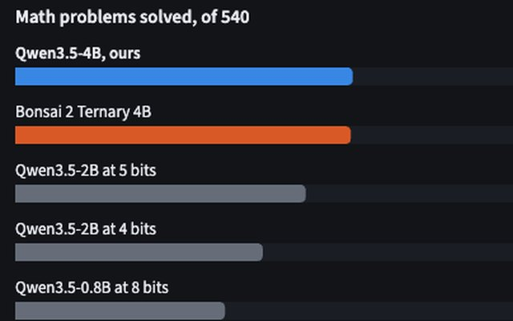
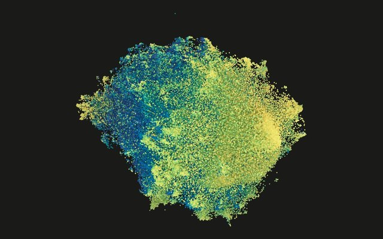
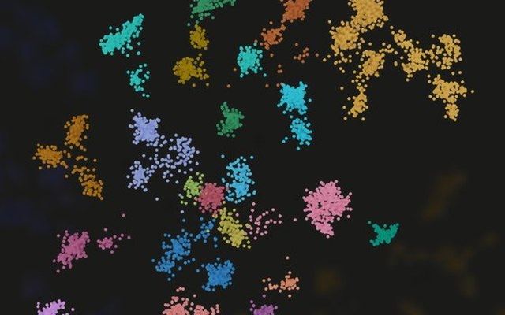
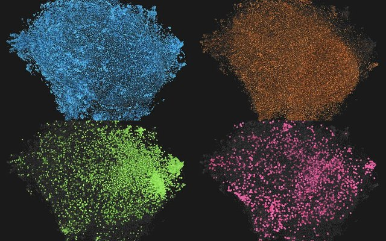

Quantization
LookAtMyQuant
A quantization compiler that delivers 12× lower KL than Q4_K_M at the same file size
October 2026

LookAtMyQuant 2
Qwen3.5-4B in 1.2 GB: 330 of 540 math problems to Bonsai 2 Ternary's 328, and closer to the original on text
November 2026
Interpretability

Encyclopedia of LLM homologies
30 language models, each drawn from its own MLP neurons and laid out on one shared map of 323 families of structure
November 2026

Neuron surgery
A model’s calculation neurons can be replaced by another model’s with 0.011% of its parameters trained
November 2026

Grafting Neural Primitives Across Models
Can a smaller Qwen model use a larger model’s arithmetic neurons? We replaced Qwen3.5-4B’s disabled calculation neurons with neurons from Qwen3.5-9B. The 4B then solved 82.4% of GSM8K word problems, reaching 92% of the intact 4B’s score and 87% of the 9B donor’s. Shuffling the same graft’s weights cut accuracy to 37.6%.
November 2026